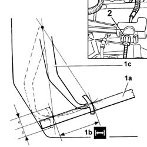

1820A14 clutch pedal - adjust travel
- Path
- Procedures > 18 CLUTCH UNIT > 1820 CLUTCH RELEASE CONTROLS > 1820A CLUTCH RELEASE MECHANICAL CONTROL > 1820A14 clutch pedal - adjust travel
- Kind
- repair procedure (removal / refitting; the operation number is the code)
- Applies to
- all engines; all production periods
- Interactive page
- https://sloeber94.github.io/elrnDB-fPnd/en/#/2752652
Applies to: all engines; all production periods
Bed in the clutch pedal by depressing to the end of its travel at least 4 or 5 times.
1. Use a metal rule (1a) to measure the maximum travel (1b) of pedal (1c).
If the value measured is different from the specified value, adjust the cable.
2. Tighten or slacken the adjustment nut and adjust the pedal travel to the 115 mm.
Settle the clutch pedal by depressing fully at least 4 or 5 times and check that the travel is within the recommended value given below.
 | Measurement | Value | |
|---|---|---|---|
- | - (mm) | 140 ± 7 |

Applies to: all engines; all production periods
Settle the clutch pedal by depressing fully at least 4 or 5 times.
Check the clutch pedal travel again.